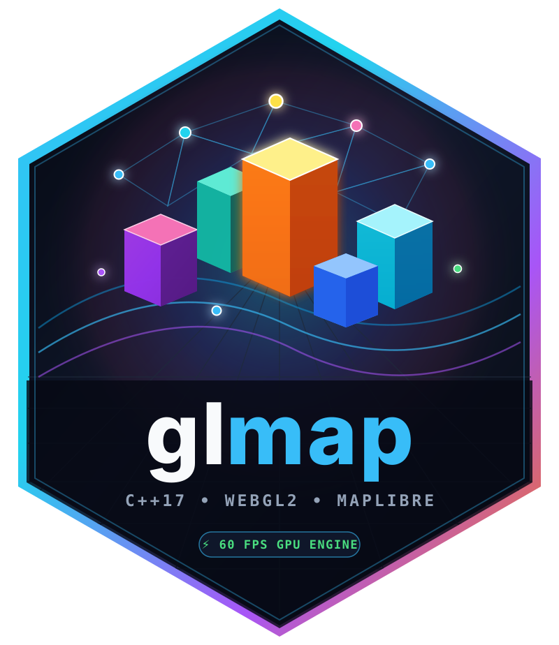

Dynamically Update 3D Polygon Extrusion Parameters (set_polygon_extrusion)
Source: R/shiny.R
set_polygon_extrusion.RdLive-updates 3D polygon extrusion scaling ("log" or "raw"),
maximum height in meters, horizontal footprint coverage, upper percentile
outlier ceiling, pitch emergence, zoom-adaptive ceiling, local viewport
ceiling, and wall lighting contrast in 0 ms without re-sending polygon geometry.
Usage
set_polygon_extrusion(
map,
id = NULL,
enabled = NULL,
scale = NULL,
max_height = NULL,
coverage = NULL,
upper_percentile = NULL,
pitch_scale = NULL,
zoom_adaptive = NULL,
viewport_ceiling = NULL,
wall_shading = NULL,
min_floor = NULL,
wireframe_pillars = NULL
)Arguments
- map
A
glmapwidget orglmap_proxy.- id
Layer ID or group name.
- enabled
Logical; whether 3D extrusion on tilt is enabled.
- scale
Scaling mode:
"log"(default) or"raw".- max_height
Numeric maximum target column height in meters at reference zoom.
- coverage
Numeric horizontal footprint scale (
0.25to1.0, default0.88).- upper_percentile
Numeric percentile ceiling (
70to100, default99) used for outlier normalization.- pitch_scale
Logical; if
TRUE, smoothly scales height from0atpitch = 0to1atpitch >= 45.- zoom_adaptive
Logical; if
TRUE, adapts maximum height to camera zoom level.- viewport_ceiling
Logical; if
TRUE, computes the percentile ceiling from features visible in the current viewport.- wall_shading
Numeric directional wall contrast (
0to0.85).- min_floor
Numeric minimum floor fraction (
0to0.15, default0.015).- wireframe_pillars
Logical; if
TRUE, draws vertical corner lines on 3D columns.